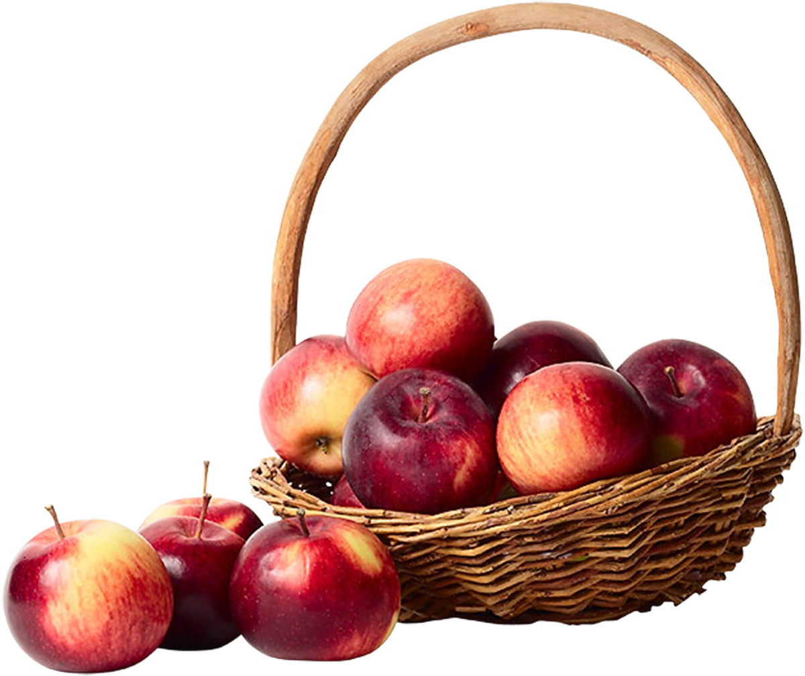

Эдем

Яблоко — чуть ли не главный российский фрукт, хозяин и старожил любого дачного сада и постоянный гость всех фруктовых прилавков. Их едят в свежем виде, готовят бесконечные пироги, джемы и варенья, пастилу и компоты. Изобилие яблок доступно нам круглый год, при этом существует такое огромное количество их сортов, что любителям яблок есть где разгуляться. Главное — не заблудиться. Представляем наш топ самых вкусных и популярных сортов яблок, который поможет сделать правильный выбор.
По больше части в него вошли осенние сорта яблок. В отличие от летних, они отлично хранятся и долго остаются сочными и свежими. Именно такие сорта мы круглый год встречаем в магазинах.